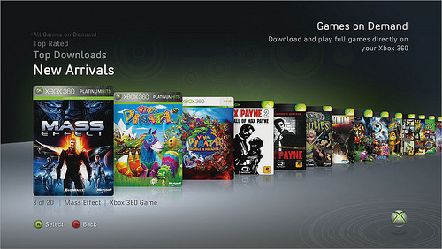
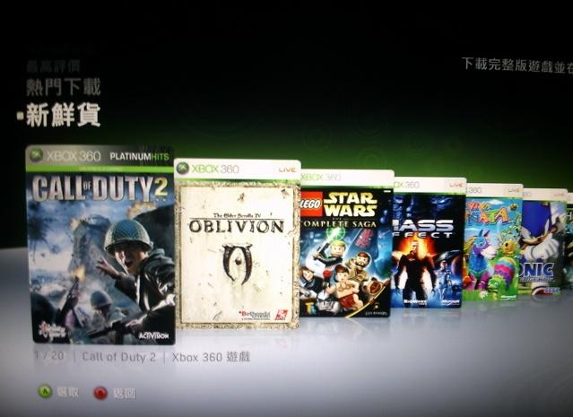

🏠 首頁
📁 SEGA 遊戲討論區
STH2006和Rally Revo可在Xbox Live下載
👤 binyi
🕐 2009-08-12 02:47:01

附件: 00.jpg
http://blogs.sega.com/usa/2009/08/11/games-on-demand/#more-2375
XBOX Live Games on Demand釋出30款遊戲下載，其中包含Sonic the Hedgehog(2006)與SEGA Rally Revo。
前者在美國和亞洲供應，後者則歐洲、非、紐西蘭和澳洲。
（Games on Demand的意思是連線下載遊戲到主機中即可遊玩，當然需要MS點數或信用卡來購買。）
👤 aoifh
🕐 2009-08-12 07:09:21
[i=s] 本文章最後由 aoifh 於 2009/8/12 03:12 PM 編輯 [/i]
下載去啦[:smile18:]
目前有下面幾套遊戲
售價是台幣，直接用信用卡線上購買
目前都是840 除了寶貝萬歲是690

附件: sth2006360dl.jpg
另外好像要夏季更新才可看到隨選遊戲的商品